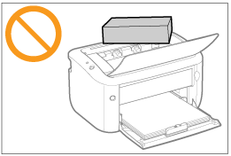
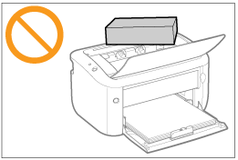

Esta impresora consta de distintas piezas electrónicas y piezas de gran precisión óptica. Lea la siguiente sección para poder manipular la impresora correctamente.
|
Consulte también "Instrucciones de seguridad importantes".
|
No coloque ningún objeto distinto al papel de impresión sobre la impresora ni sobre las bandejas o cubiertas. Esto podría provocar daños en la impresora.


Evite zarandear la impresora. Esto podría deteriorar la calidad de impresión o provocar daños en la impresora.

No deje abierta la tapa superior más tiempo del necesario. La exposición de la impresora a la luz solar directa o a una luz fuerte podría provocar un deterioro de la calidad de impresión.
No abra la tapa superior durante la impresión. Esto podría provocar daños en la impresora.
Manipule cada una de las bandejas o cubiertas con mucho cuidado al abrirlas o cerrarlas. Si no lo hace así, podrían producirse daños en la impresora.
Si desea colocar una funda sobre la impresora para evitar la entrada de polvo, apague la alimentación y deje enfriar suficientemente la impresora antes de cubrirla.
Si no tiene pensado utilizar la impresora durante un período de tiempo prolongado, desconecte el enchufe de la toma de corriente de CA.
No utilice ni almacene la impresora en una sala donde se utilicen productos químicos.